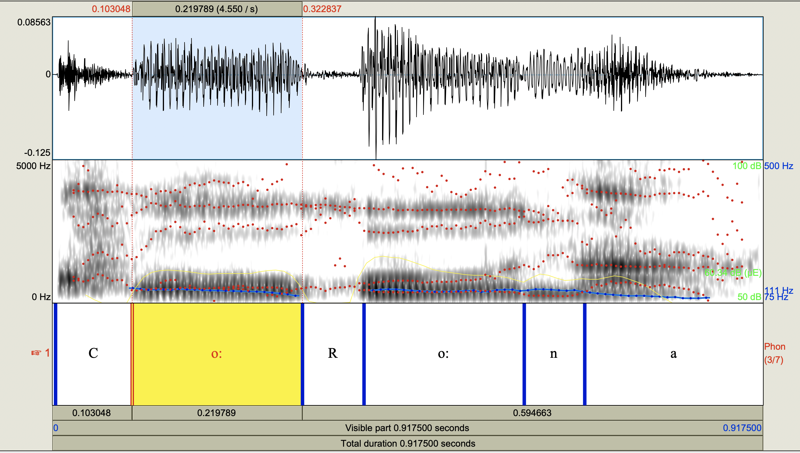
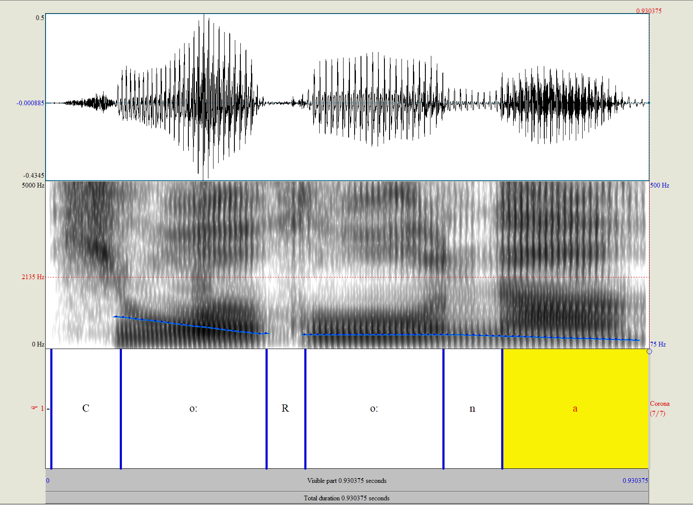
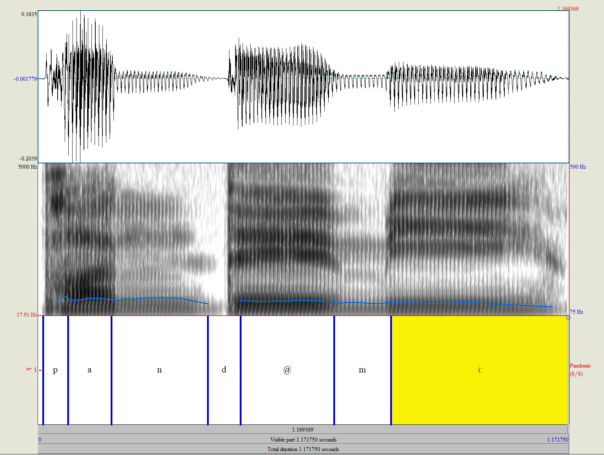
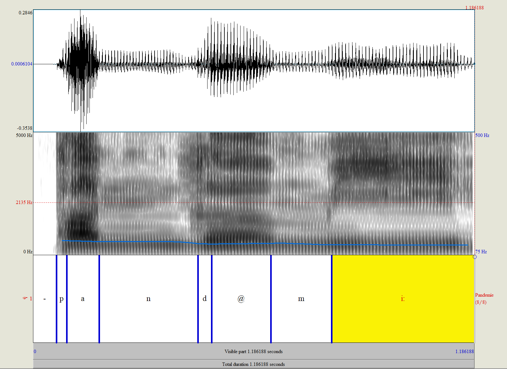
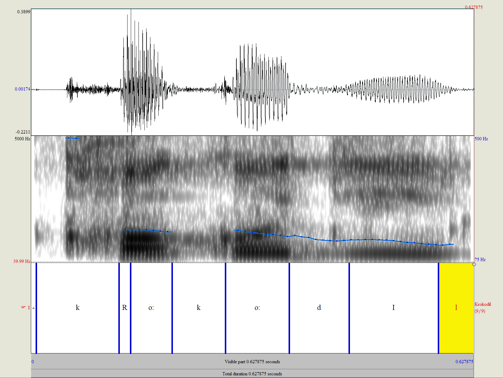
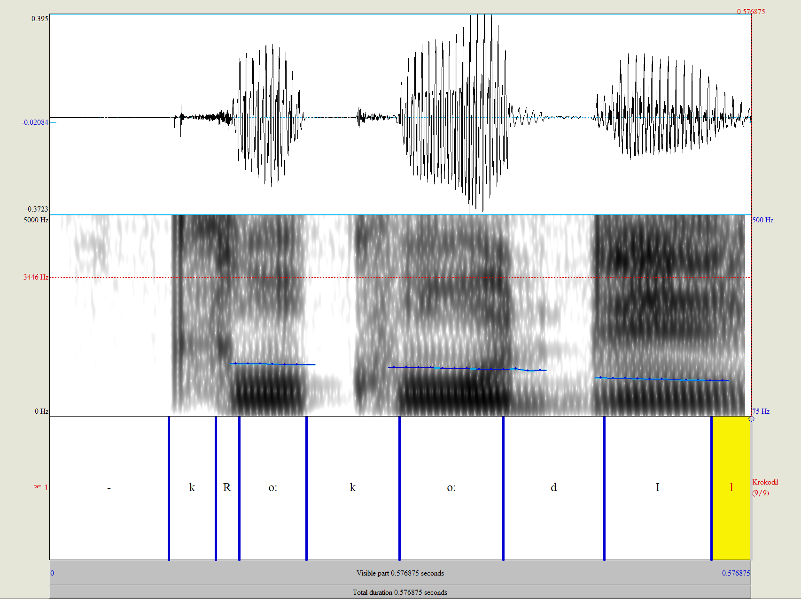

Übung 2
Aufgabe 2 - 1.1
Mit dem Headset und PRAAT soll von jedem Gruppenmitglied ein anderes dreisilbiges Wort aufgezeichnet
werden.
Das Wavesignal kann dann im Edit-Fenster angezeigt werden.
Nun soll zunächst die phonetische Transkription nach der folgenden SAMPA-Notation erfolgen:
Wörter:
| Wort |
Transkription |
Student |
| (1) Corona |
Co:Ro:na |
Fatih |
| (2) Pandemie |
pand@mi: |
Mehmet |
| (3) Krokodil |
kRo:ko:dIl |
Taher |
Aufgabe 2 - 1.2
Nun soll im Editor durch Anwahl mit der Maus die Länge der einzelnen Laute im aufgezeichneten Wort
bestimmt werden.
Dazu wählt man mit linkem Mausklick den Beginn des gewünschten Bereichs an und zieht mit der Maus nach
rechts,
so daß sich das rosaumrandete Fenster in der gewünschten Breite öffnet. Über dem rosa Rahmen
erscheinen links und rechts
Anfangs- und Endzeitpunkt des gewählten Bereichs, in der Mitte die Länge in Sekunden. Durch Abspielen
(Button über
Rahmen drücken) kann der Bereich nun wiedergegeben werden.
Wenn uns diese Angaben vorliegen, können wir sie verwenden, um dasselbe Wort mit MBROLA synthetisieren
zu lassen.
Gib das synthetische Wort wieder und vergleiche mit dem Original. Dazu kann das synthetische in ein
WAV-File exportiert werden.
Sieh dir das synthetische File in PRAAT an und kontrolliere ob die Lautlängen und die Grundfrequenz
korrekt realisiert wurden.
Wort (1):
| SAMPA |
Anfang [s] |
Ende [s] |
Dauer [s] |
Grundfrequenz |
| _ |
0 |
0.004185 |
0.004185 |
_ |
| C |
0.004185 |
0.103048 |
0.098863 |
_ |
| o: |
0.103048 |
0.322837 |
0.219789 |
111 |
| R |
0.322837 |
0.402262 |
0.079425 |
_ |
| o: |
0.402262 |
0.609042 |
0.206780 |
111 |
| n |
0.609042 |
0.687098 |
0.078056 |
_ |
| a |
0.687098 |
0.917500 |
0.230402 |
95.9 |
| Aufnahme |
Synthese |
_ |
|  |
 |
|
|
|
Wort (2):
| SAMPA |
Anfang [s] |
Ende [s] |
Dauer [s] |
Grundfrequenz |
| _ |
0 |
0.012052 |
0.012052 |
_ |
| p |
0.012052 |
0.066938 |
0.054886 |
124.8 |
| a |
0.066938 |
0.162597 |
0.095659 |
120.6 |
| n |
0.162597 |
0.375086 |
0.212488 |
120.3 |
| d |
0.375086 |
0.447222 |
0.072136 |
112.9 |
| \@ |
0.447222 |
0.653437 |
0.206216 |
115.5 |
| m |
0.653437 |
0.778892 |
0.125454 |
110 |
| i: |
0.778892 |
1.171750 |
0.392858 |
108.8 |
| Aufnahme |
Synthese |
_ |
|  |
 |
|
|
|
Wort (3):
| SAMPA |
Anfang [s] |
Ende [s] |
Dauer [s] |
Grundfrequenz |
| _ |
0 |
0.007714 |
0.007714 |
_ |
| k |
0.007714 |
0.125123 |
0.117409 |
- |
| R |
0.125123 |
0.141516 |
0.016 |
185.1 |
| o: |
0.141516 |
0.199999 |
0.058483 |
182 |
| k |
0.199999 |
0.275761 |
0.075762 |
_ |
| o: |
0.275761 |
0.366144 |
0.090383 |
172.1 |
| d |
0.366144 |
0.450767 |
0.084623 |
154.1 |
| I |
0.450767 |
0.577480 |
0.126713 |
145.6 |
| l |
0.577480 |
0.627875 |
0.050395 |
- |
| Aufnahme |
Synthese |
_ |
|  |
 |
|
|
|
Aufgabe 2 - 2
Fragen:
Wie unterscheidet sich die Synthese-Wellenform vom Original?
Wie klingt die Synthese im Vergleich zum Original?
Wie gut werden die Dauern und die Grundfrequenzkontur des Originals nachgebildet?
Antwort: Die Amplituden sind größer.
Unterschiedliche Tonhöhen werden durch Variation der Auslesegeschwindigkeit erzeugt. Nachteilig hierbei
ist, daß bei
einer von der Originalgeschwindigkeit abweichenden Auslesung eine Zeitkomprimierung bzw. -dehnung
verursacht wird,
die zu einer Stauchung bzw. Dehnung des gesamten Spektrums führt. Dies verschiebt die Formantbereiche
des Spektrums je
nach Abweichung verschieden stark und führt bei Sprachaufnahmen zum bekannten ‚Mickey Mouse‘-Effekt.
Bei größeren
Intervallen entspricht das gehörte dann nicht mehr an das Original.
Der für eine realistisch klingende Sampling-Synthese benötigte Speicherplatz ist erheblich. Zur
Reduzierung des
Speicherbedarfs gibt es neben der Verringerung der Anzahl der abspielbaren Samples und der
Datenreduktion (Bitratenreduktion,
Samplefrequenz- Reduktion, MPEG usw.) auch noch die Möglichkeit, die Länge der aufgezeichneten Klänge
zu minimieren und diesen
Eingriff mittels einer periodischen Wiederholung bestimmter Teile aus dem quasistationären Klangbereich
zu kaschieren (Looping).